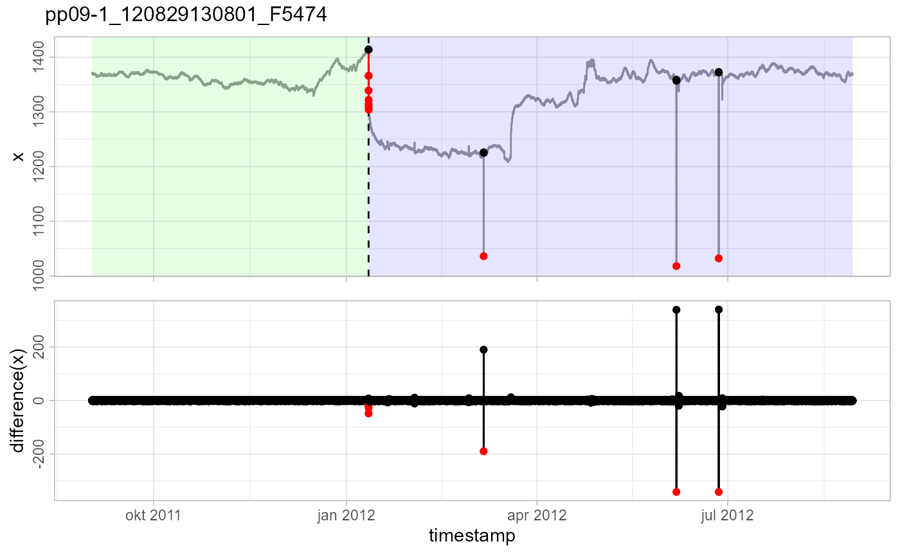
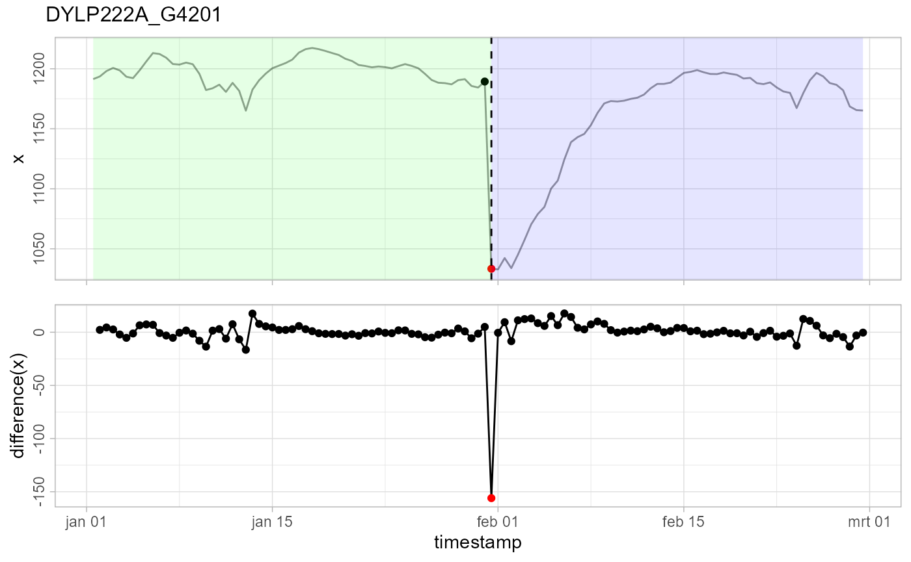

This is an advanced guide. It explains how the detect_ functions work for hydrostatic pressure data. Make sure you first read the getting started material.
Hydrostatic pressure model
We assume that the hydrostatic pressure behaves according to the following model:
\[ z_t = z_{t-1} + \epsilon(\Delta t) \]
In literature this also goes by the name of a pure random walk: the next point starts from the previous and jumps with a random deviation \(\epsilon(\Delta t)\).
Error function
The error \(\epsilon\) is a function of time difference between \(t\) and \(t-1\). The underlying idea is that the larger this time-interval \(\Delta t\), the larger the variance of \(\epsilon\). Based on \(\epsilon\) analysis of “correct” a-priori hydrostatic pressure timeseries, the following density gradients are extracted in function of \(\Delta t\).

Distribution of errors
Based on the “correct” a-priori timeseries, the densities do not seem to be normal. For example, for \(\Delta t = 5 \text{min}\) we have:

On the other hand, without tidal effect, the normality seems much more pronounced. For example, \(\Delta t = 12 \text{h} 25 \text{min}\):

This suggest that the model should be adjusted for tidal effects.
Extensions
The main idea is that \(z_t\) is polluted by different kinds of events. We define each of these events separately. Inspiration for these definitions is mainly taken from the works of Fox (1972) and more recent papers by Chen and Liu (1993) and Galeano and Pena (2013). Furthermore, an R implementation by López-de-Lacalle (2019) was used for the initial evaluation of these ideas.
Outliers
An additive outlier (AO) at time \(t_{AO}\) is defined as an exogenous change of a single observation.
\[ x_t = z_t + \omega I(t = t_{AO}) \]
The \(I()\) is the indicator function. Furthermore, \(x_t\) is the observed value, and \(z_t\) is the underlying latent random walk as defined previously. \(z_t\) is “polluted” in this case with \(\omega\) at time \(t = t_{AO}\) resulting in observed \(x_t\). Rewriting the equation without \(z_t\) we get:
\[ x_t = x_{t-1} + \epsilon(\Delta t) + \omega \left[I(t=t_{AO}) - I(t = t_{AO} + 1) \right] \]
These equations without \(z\) we need later for likelihood maximization.
Levelshifts
A level shift (LS) is an exogenous change that lasts. Its definition is as follows:
\[ x_t = z_t + \frac{\omega I(t = t_{LS})}{1-B} \]
Note that \(B\) is the backshift operator such that \(Bx_t = x_{t-1}\) and \(BI(t = t_{LS}) = I(t-1 = t_{LS})\). Here the \((1-B)^{-1}\) evaluates to \(1 + B + B^2 + B^3 + \dots\). This is nothing more than saying that after \(t\) a constant \(\omega\) is always added on top of the latent random walk \(z_t\). Removing \(z_t\) from the equation reveals a more comprehensive form:
\[ x_t = x_{t-1} + \epsilon(\Delta t) + \omega I(t=t_{LS}) \]
Temporal changes
A temporal change (TC) is an event that decays exponentially with factor \(\delta\).
\[ x_t = z_t + \frac{\omega I(t = t_{TC})}{1-\delta B} \]
We can see this exponential decay more clearly once we rewrite \((1-\delta B)^{-1}\) as \(1 + \delta B + \delta^2B^2 + \delta^3B^3 + \dots\). For example, if \(\omega\) = 10, this is how it decays in function of time \(t\) for \(\delta\) = 0.5 and 0.9:
10*0.5^(0:5)
#> [1] 10.0000 5.0000 2.5000 1.2500 0.6250 0.3125
10*0.9^(0:5)
#> [1] 10.0000 9.0000 8.1000 7.2900 6.5610 5.9049Note how at each step, respectively 50 % and 90 % of the effect remains from the previous step.
Removing the latent \(z_t\) from the equation we end up with:
\[ x_t = x_{t-1} + \epsilon(\Delta t) + \omega \left[ I(t=t_{TC}) - \frac{(1-\delta)I(t = t_{TC} + 1)}{1 - \delta B} \right] \]
Model building
Based on AO, LS and TC written in function of \(x\) only, one sees that the difference \(x_t - x_{t-1} = \epsilon (\Delta t)\) unless AO, LS or TC occurred. Thus our first step in optimization is to take the differences \(x_t - x_{t-1}\) and test how likely they are under the distribution of \(\epsilon (\Delta t)\). If very unlikely (cf. TODO), then consider the observation a candidate for AO, LS or TC.
These three events can come in all kinds of combinations. It seems difficult, if not impossible, to write a decent if-else structure to catch all the possible configurations. That is why we chose a likelihood based approach.
Likelihood function
Assuming independence of the error term we write:
\[ L(\mathbf{\theta} ; \mathbf{x}) = p(\mathbf{x} | \mathbf{\theta}) = \prod_{t=2}^{n} p(x_t, x_{t-1} | \mathbf{\theta}) \]
where \(\mathbf{x} = (x_1, \dots, x_n)\) and \(\mathbf{\theta}\) is the vector of parameters \(\omega\)’s and \(\delta\)’s accompanied by their corresponding indexes \(t_{AO}\), \(t_{LS}\) and \(t_{TC}\).
Stepwise model selection
First problem is that we do not know how many AO, LS and TC events there are. Thus we are naturally led to some form of model selection. Model \(M_0\) is a model in which no event occurred (i.e. 0 stands for zero-parameter model). \(M_1\) is a model in which an AO or LS event occurred (i.e. a one-parameter model). How do we choose between the two? Well, the one that is more likely wins (i.e. the one for which the likelihood function \(L(\mathbf{\theta} ; \mathbf{x})\) results in the highest likelihood.)
In the next step we test whether this \(M_1\) model is significantly better than the \(M_0\) model. We do this with the likelihood ratio (LR) test. If \(M_1\) is significantly better than \(M_0\) we continue with \(M_1\) and add one extra AO or LS parameter which results in a \(M_2\) model. This model also competes with a model in which only one TC event occurred. (This is because a TC event has two parameters \(\omega\) and \(\delta\), and thus an empty model with a TC event added is automatically a \(M_2\) model.) Then the best \(M_2\) model is tested for significance against the best \(M_1\) model, etc.
Note that \(\delta\) varies between \(0\) and \(1\). If \(\delta = 0\) we have an outlier (AO), and if \(\delta = 1\) we have a level shift (LS). How do we choose between a TC with \(\delta = 0\) and an AO model? Since the TC model uses two parameters to explain the same event as AO with one parameter, an AO model is more parsimonious and thus more likely. Thus, a TC will only be chosen if \(\delta\) is significantly different from \(0\) and \(1\).
In case we have a tie between multiple \(M_m\) models with \(m\) parameters, then the one for which the sum of the absolute values of parameters is smallest is taken as winner. This is a poor man’s simulation of a prior on the parameters: the smaller the parameter, the more likely it is, under equal likelihood.
This model selection procedure is quite involved. Programmaticaly, we define an object ProgressTable which keeps track of all the best models \(M_0\) up till the last significant one. Besides the forward model selection, we also make use of backward selection (cf. TODO) because adding a parameter sometimes makes an existing parameter insignificant, which opens a new path of possibilities in case the insignificant parameter is removed. The best model \(M_m\) is the most likely model with \(m\) parameters of all the ones tested, but not necessarily the most likely of all the possible configurations. In practice, although this maxima might be local (i.e. not global), it is taken as a good compromise between computational speed and maximization accuracy.
Likelihood optimization
Each time we add a parameter, our likelihood function changes and must be optimized for most likely \(\mathbf{\theta}\). Using a smoothing kernel for \(\epsilon(\Delta t)\) more often than not results in a non-convex likelihood. Assuming \(\epsilon(\Delta t)\) to be normal has several advantages: speed, numerical stability (due to \(logL(\mathbf{\theta} ; \mathbf{x})\)) and “mostly” convexity. Experience shows that mixing AO, LS and TC events sometimes results in non-convex likelihoods.
Further optimization is also made by noting the effect of AO, LS and TC events on \(x\). For example, an LS event on \(t_{LS}\) has only impact on \(x_{t_{LS}}\). An AO event has only impact on \(x_{t_{AO}}\) and \(x_{t_{AO} + 1}\). And a TC event has only impact on \(x_{t_{TC}}\) up until the effect dies out. In other words, we can limit the likelihood optimization to a window of only a few points. (cf. TODO)
Summary
Algorithm for hydrostatic pressure AO, LS and TC detection can be summarized in pseudo-code as follows:
- Compute \(x_t - x_{t-1}\)
- Test for outliers based on \(\epsilon(\Delta t)\) and note the indexes \(t_i\)
- For \(m\) = 0 .. Inf
- Using \(M_m\) iterate over all possible additions (\(t_i\), AO, LS and TC)
- Compute likelihoods
- Select \(M_{m+1}\) as the model with \(m\) parameters and highest likelihood
- Using \(M_m\) iterate over all possible additions (\(t_i\), AO, LS and TC)
- Do while \(M_{m+1}\) vs. \(M_m\) is significant
- \(M_m\) is the best model: extract AO, LS and TC indexes and parameters.
Examples
The following case shows nicely the “creativity” of the algorithm in selecting the events.

The last three outlier (AO) events are obvious. But the first event is a double event: at the same time we have a level shift (LS) and a temporal change (TC). The level shift causes the drop, and then a temporal change jumps and decays back to the new level. It is the best way the model has found to explain what happened there using the AO, LS and TC events.
There were some major floods in Flanders in november 2010. DYLP006X_80773 lies in the ‘flooding Dijle’, so this is a typical example of a flood event. It is not detected as an event because the differences \(x_t - x_{t-1}\) are within the expected \(\epsilon (\Delta t)\) range.

In this case, a LS event is detected, but not a TC event as one might expect. The reason why is because after the drop, it stays low for several points (LS), and then gradually starts decaying back (TC). Exponential decay is strongest at the start, so TC doesn’t fit well for the first couple of points where the decay effect should be the strongest. Eventually, the algorithm chooses a TC or a LS event based on the likelihood, and in this case a LS event has won.
Future work
- Adjust model for tidal effects.
- Better \(\epsilon (\Delta t)\) treshold estimation than current +20 % of min/max value.
- Revise LR test threshold.
- Use a-priori data more as a prior and estimate \(\epsilon(\Delta t)\) with data at hand.
- Extract AO, LS and TC if
verbose = TRUE. - Revise the 25 observations window.
- Revise parameter significance test.
- Lower threshold based on air pressure for
detect_outliers()? -
detect_temporalchanges()should flag everything until the decay is insignificant. - Issue #47: if intervals are not divisible by 5min and less than 5min (fixed): small 1min sample is used for \(\epsilon(\Delta t)\) estimation.
- Show thresholds on diagnostic plots for differences(x).
References
Chen, Chung, and Lon-Mu Liu. 1993. “Joint Estimation of Model Parameters and Outlier Effects in Time Series.” Journal of the American Statistical Association 88 (421): 284–97. https://doi.org/10.1080/01621459.1993.10594321.
Fox, Anthony J. 1972. “Outliers in Time Series.” Journal of the Royal Statistical Society. Series B (Methodological) 34 (3): 350–63. http://www.jstor.org/stable/2985071.
Galeano, Pedro, and Daniel Pena. 2013. “Finding Outliers in Linear and Nonlinear Time Series.” In Robustness and Complex Data Structures: Festschrift in Honour of Ursula Gather, edited by Claudia Becker, Roland Fried, and Sonja Kuhnt, 243–60. Berlin, Heidelberg: Springer Berlin Heidelberg. https://doi.org/10.1007/978-3-642-35494-6_15.
López-de-Lacalle, Javier. 2019. Tsoutliers: Detection of Outliers in Time Series. https://CRAN.R-project.org/package=tsoutliers.